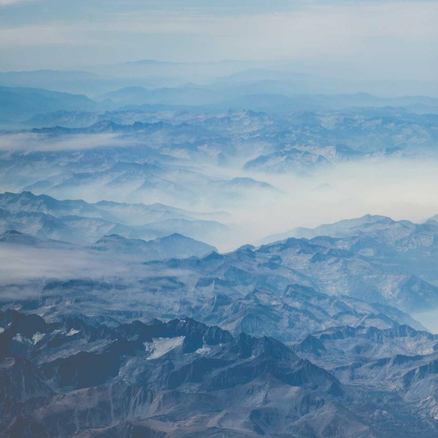
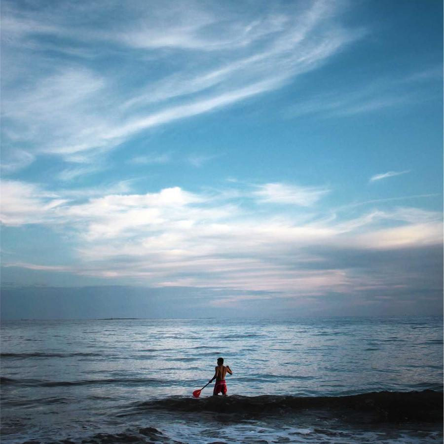
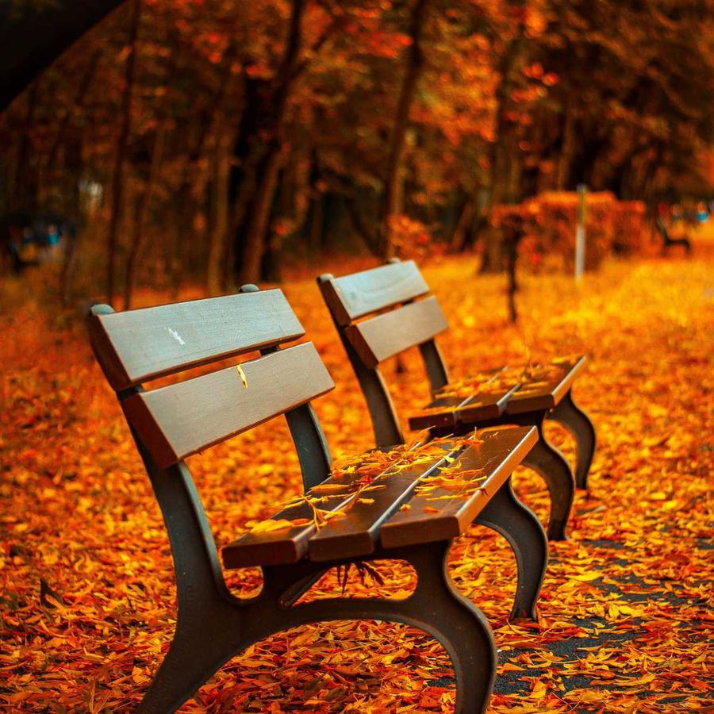
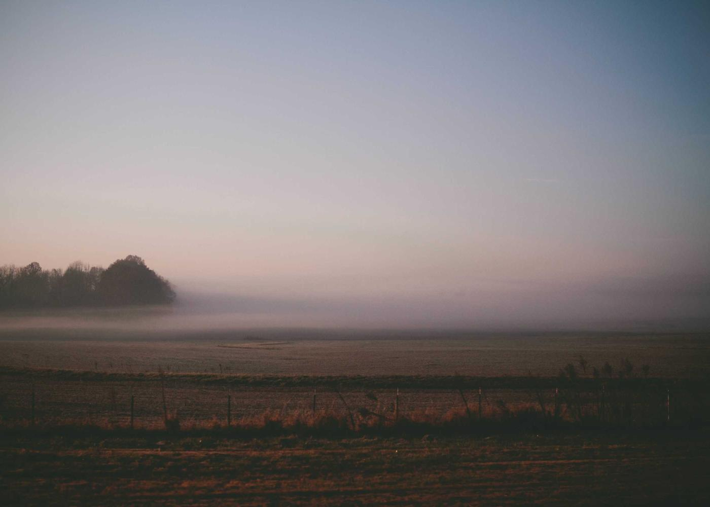

1st place
DOZEY
2025
We recruit and train student teams to build for-profit ventures that take on real social and environmental challenges — then send our strongest teams to compete on the national stage.
The Hult Prize is a global student entrepreneurship competition. Teams of students design for-profit ventures that address social and environmental challenges aligned with the United Nations Sustainable Development Goals, then pitch their ideas and compete through a series of stages toward national and global competition. It turns classroom ideas into real ventures — judged by real entrepreneurs, academics, and industry professionals.
20+
student teams have competed through our chapter and its ENG 108 partnership
2
teams advanced from UC Davis to the Hult Prize National Competition
The top three teams from this year's Hult Prize OnCampus competition.

1st place
2025

2nd place
2025

3rd place
2025
Team photos are placeholders — replace with real photos before launch.

Join Hult Prize @ UC Davis and help build ventures that take on the world's biggest challenges — no business background required.
Get Involved